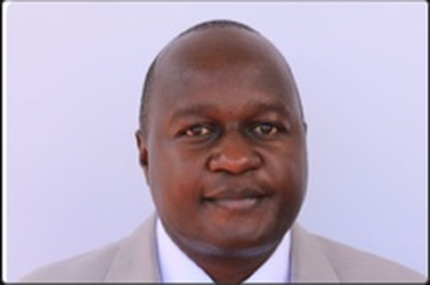

Engineer. Accountant. Representative.
Hon. Julius Nakiyi Muntu’s public profile combines civil engineering, accounting and financial-management experience with grassroots political engagement in Budadiri East.

Technical and financial discipline.
Public reporting describes him as trained in civil engineering and applied accounting, with professional experience in accounting and financial management. AscendisMed’s public leadership profile has also listed him in Uganda leadership.
New Vision profile ↗AscendisMed profile ↗
Transparent and visible leadership - accountable to the people, driven by their priorities and committed to transforming lives.
Persistence, community engagement and representation.
Public profile in Bugisu cooperative leadership
New Vision reported his interest in leadership of Bugisu Cooperative Union and described his civil-engineering and applied-accounting background.
Contested Budadiri East
Visible Polls records a third-place finish with 7,941 votes as an independent candidate in the 2021 parliamentary election.
Five-point development agenda
Public campaign reporting described priorities around economic liberation, infrastructure, social services, unity and strategic collaboration.
Member of Parliament, Budadiri County East
Current Parliament reporting identifies him as the constituency’s MP in the 12th Parliament.
Not a personality brochure.
This platform is designed to become the constituency’s single source of verified priorities, parliamentary action, community engagement, opportunities and project follow-up.
See the accountability model →